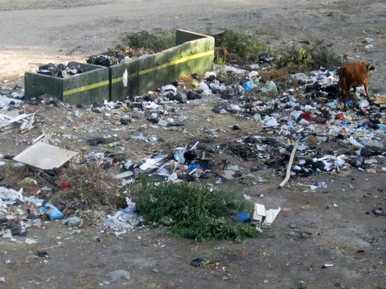
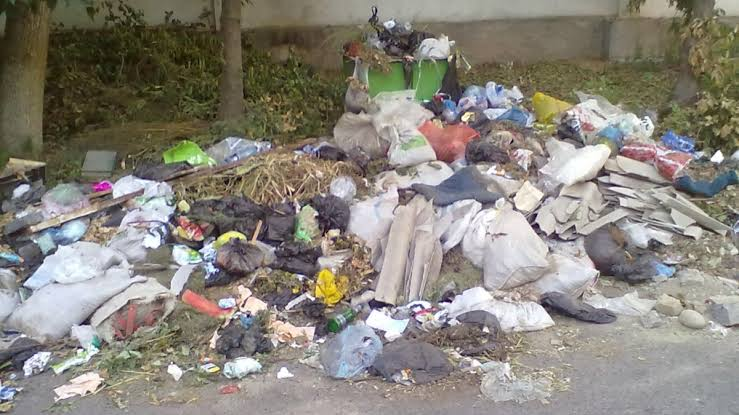
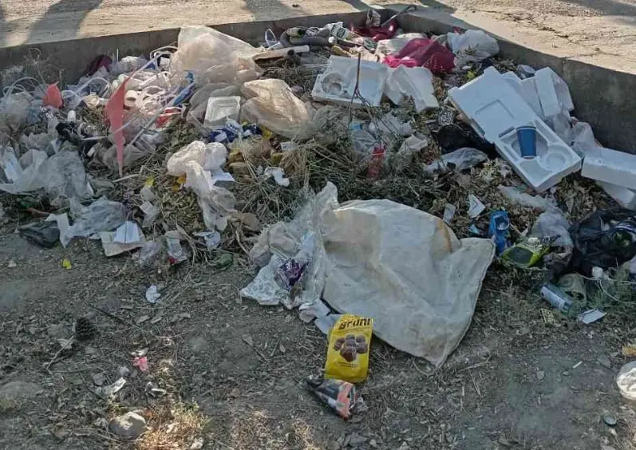

Мусор в городе Бекабад
В последние годы проблема накопления отходов в Бекабаде становится все более актуальной. Бытовые отходы, пластик и строительный мусор часто оказываются на улицах и пустырях, что ухудшает экологическую обстановку и внешний вид города.
Ситуация в нашей махалле
В махаллях главными причинами скопления мусора являются несвоевременный вывоз отходов, нехватка контейнерных площадок и стихийные свалки в частном секторе. Для решения этой проблемы важно привлекать самих жителей к соблюдению чистоты.
Фотоматериалы
Наглядные примеры и фотографии мест скопления мусора:

Фото 1: Проблема у дорог

Фото 2: Скопление бытовых отходов

Фото 3: Ситуация в махалле

Фото 4: Уборка и субботники
Предлагаемые решения
- Регулярный и своевременный вывоз мусора из махалли.
- Установка дополнительных мусорных баков и контейнеров.
- Проведение субботников с участием жителей и школьников.
- Повышение экологической культуры населения.